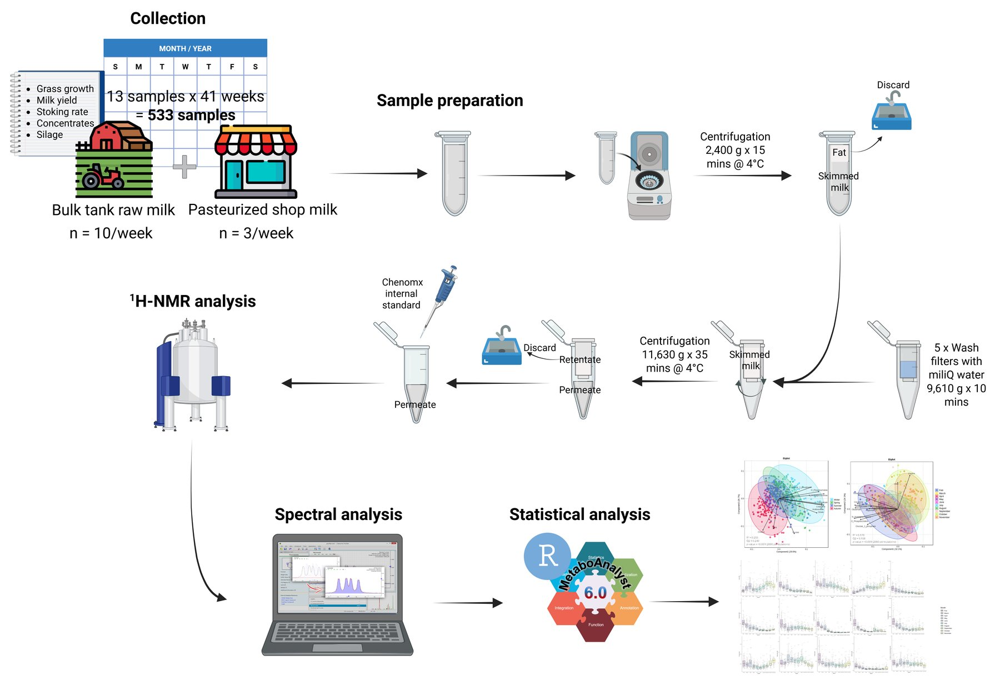
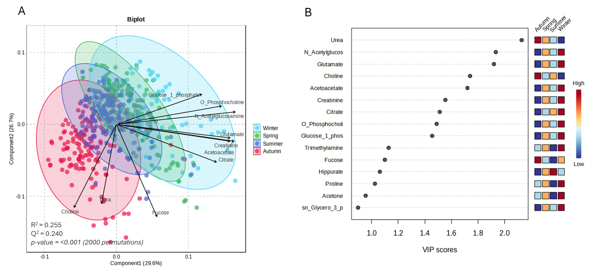
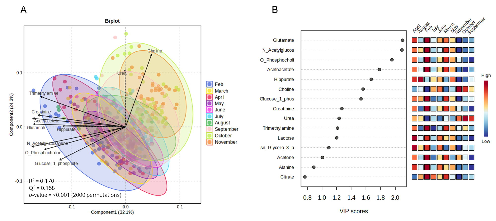
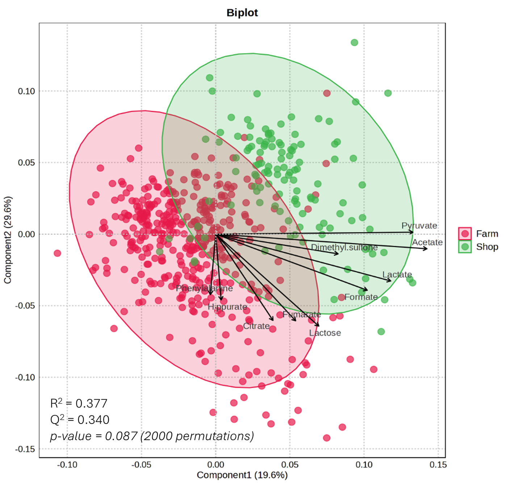

Studies / Seasonality study
Seasonality of the pasture-based milk metabolome
This study characterised the milk metabolome in Irish seasonal pasture-based dairy systems using ¹H-NMR spectroscopy. Seasonal, lactational and milk source-related variation was investigated across the production year using 533 milk samples collected over 41 weeks. The work sought metabolites and pathways associated with physiological adaptation, energy balance, metabolic stress and nitrogen use efficiency, and evaluated potential seasonal biomarkers.
Rojas-Gómez P, Pariyani R, Dineen M, Lynch D, Bateman L, Roche E, Maguire AR, McCarthy NA, Murphy TB, O’Mahony JA, O’Callaghan TF. The MetaBó-Bainne Study: characterisation of the milk metabolome from a seasonal pasture-based dairy system using 1H-NMR spectroscopy. Food Chemistry (2026). Read the paper ↗
Study design
Over 41 weeks, raw bulk tank milk was collected weekly from ten dairy farms (n = 10 per week) and three commercial pasteurised skimmed milks were bought weekly (n = 3 per week): 13 samples × 41 weeks = 533 samples. Samples were defatted, filtered through 3 kDa filters and analysed by ¹H-NMR; 38 metabolites were quantified.
Calendar seasons: Winter = February; Spring = March, April, May; Summer = June, July, August; Autumn = September, October, November.


Key findings
- 30 of the 38 quantified metabolites varied significantly with season.
- February (winter) milk, from early lactation, was enriched in ketone bodies, O-phosphocholine, creatinine and glucose-1-phosphate, reflecting metabolic stress and negative energy balance after calving.
- Autumn milk, from late lactation, had more choline and urea, indicating better energy status but lower nitrogen use efficiency.
- VIP analysis by season highlighted urea, N-acetylglucosamine, glutamate, choline, acetoacetate, creatinine, citrate, O-phosphocholine, glucose-1-phosphate, trimethylamine, fucose, hippurate and proline (VIP > 1).
- Farm and shop milk profiles did not separate significantly (PLS-DA permutation test, n = 2,000, p = 0.087).
Published figures
From the multivariate analysis of all 533 milk samples. Click a figure to enlarge it.






Through the year
Monthly mean ± SD in mM. Press play to move through the months; every chart on this page follows the same month.
Fold change against February, the 12 most seasonal metabolites
Seasonal clock
The most seasonal metabolites around the calendar against their own average. Pick up to four.
Seasonal trajectory (PCA)
PCA of the monthly means (log2, autoscaled); the path follows the calendar and the ring marks the selected month. PC1 explains 41.3%, PC2 26.7%. The published PLS-DA used the individual samples.
Seasonal fingerprint
Each metabolite against its own February–November average, ordered by the month it peaks. Click a row to chart it above.
By season
Calendar seasons: Winter = February; Spring = March, April, May; Summer = June, July, August; Autumn = September, October, November. Mean ± SD in mM. Shading runs from each metabolite's lowest season (light) to its highest (dark).